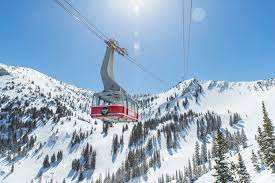

Founded in the winter of 1971, Snowbird is located in Utah's legendary Wasatch mountain range up Little Cottonwood Canyon. Snowbird is known for its adrenaline-inducing terrain, stunning mountain views, and its luxury accommodations.

Pros and Cons of SnowBird:
PROS
Large volumes of snow. Often there is abundant powder everywhere for the taking.
Utah’s claim of having the “Greatest Snow on Earth” is really true at Snowbird, and the quality of the powder is enhanced due to the high elevation
The resort has a long season that generally goes from mid November through to May.
Lots of terrain variety, and the inter-connection with Alta
Snowbird has great in-bounds steeps for experts
CONS
This is not the best resort for beginners and low-end intermediates
Powder days are very common at Snowbird, but a downside is that skiers from Salt Lake City flock here in hordes. If you want to get any freshies, assertiveness and dodging ability is required at both the top and bottom of the aerial tram. Canyon road traffic can also be very problematic.